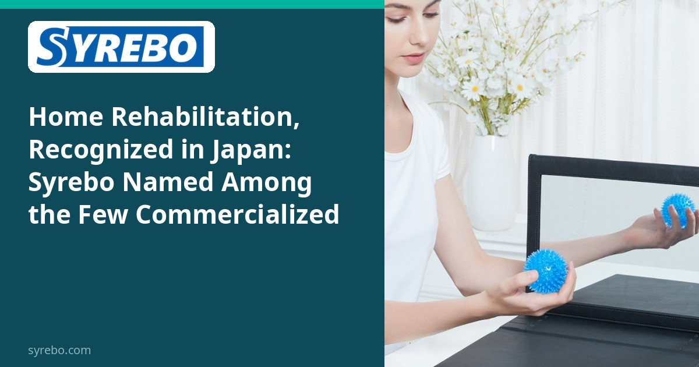

Coluna de pesquisa clínica Syrebo
Leituras baseadas em evidências sobre a reabilitação robótica da mão
Do artigo
在宅利用を想定した片麻痺手指リハビリロボットにおける医療者との連携と開発
古館裕大、千葉馨、石田裕二、三上貞芳
日本ロボット学会誌, 2023; 41(4)
DOI: 10.7210/jrsj.41.331


A reabilitação da mão em casa é discutida há anos. Os exemplos comercializados na literatura da sociedade continuam a ser poucos. Em 2023 o Journal of the Robotics Society of Japan publicou um artigo de Furudate e colegas sobre um robô de reabilitação dos dedos pensado para o uso em casa após hemiparesia, e sobre desenvolvê-lo com clínicos. Os autores notam que os casos comercializados de uso em casa continuam raros, e nomeiam a luva de mão Syrebo como um desses casos. O artigo é uma nota de desenvolvimento e colaboração, não um ensaio de eficácia.
Entre a enfermaria e a casa estão o vestir o dispositivo, os limites de segurança e o uso quando não há terapeuta na sala. Os artigos de engenharia colocam essas restrições dentro do trabalho com clínicos. Ser nomeado significa que os autores escolheram este produto como exemplo. Não significa que a sociedade tenha feito um estudo controlado.
«Poucos foram comercializados» é também um limite. Lê-lo como «a reabilitação em casa já está geralmente disponível» transforma um exemplo numa afirmação epidemiológica.
O artigo não imprime uma fotografia da luva. A imagem da luva e da consola nesta coluna é a figura 2 do caso da Cureus de 2024 de Sharma e colegas (CC BY 4.0). A legenda diz isso. Não é a figura original do artigo da sociedade japonesa.
Desenho do estudo
Artigo de desenvolvimento numa revista de sociedade, sobre robôs de dedos para uso em casa e sobre o trabalho com clínicos. Não há randomização nem comparação funcional entre grupos.
Amostra e esquema
Não se aplica um tamanho de amostra clínico. O artigo discute um caminho para um produto, não resultados numa coorte.
Resultados principais
O enunciado, tal como é usado aqui, é que os robôs de dedos comercializados orientados para casa continuam a ser poucos, e que a Syrebo é um exemplo que os autores nomeiam. A coluna mantém esse âmbito. Não é reescrito como eficácia, como um lugar de mercado ou como a promessa de que o treino em casa será concluído.
O valor da nota é que o uso em casa é tratado como um problema de engenharia definido com clínicos. Um exemplo comercializado mostra que um dispositivo passou do protótipo ao produto.
Saber se pode ser usado de forma segura e repetida em casa continua a depender da indicação, da supervisão e de estudos clínicos separados. O artigo da sociedade não fornece esses dados.
Limites Não é um ensaio clínico da Syrebo. A fonte sublinha que os exemplos comercializados continuam poucos. A fotografia vem de outro caso de acesso aberto.